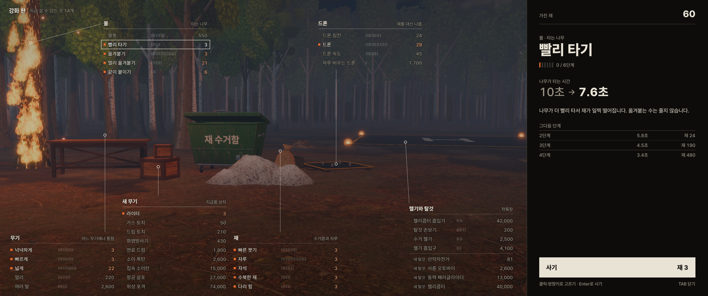
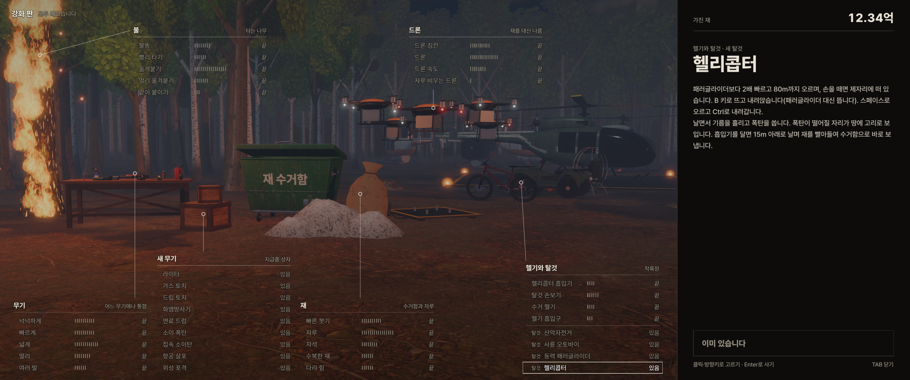
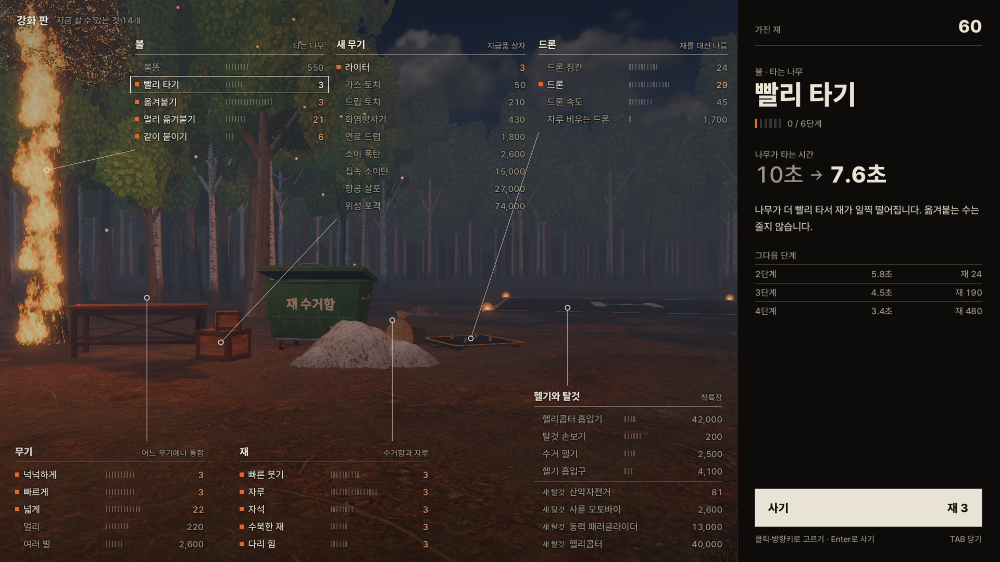
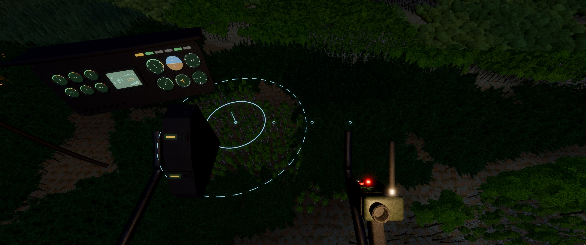
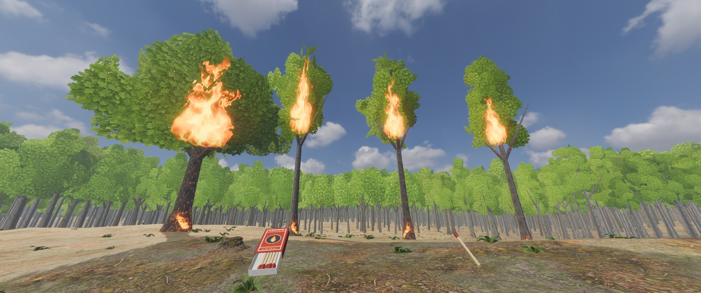

불씨 하나 v0.9 · 지금까지 한 일
v0.8.1을 플레이하시고 주신 말씀을 바탕으로 v0.9를 만드는 중입니다. 대부분은 끝났고, 가격과 무기 세기를 맞추는 일(밸런스)만 오래 걸리고 있습니다. 밸런스를 지금 상태에서 마무리하고 테스트 빌드를 드리는 쪽으로 바꿨습니다.
| 항목 | 상태 | 비고 |
|---|---|---|
| 그림 판(강화 화면) | 끝남 | 시안 3으로 게임에 넣음 |
| 플레이 지적 1~4 | 끝남 | 나무 불, 나무 사라짐, 착탄 표시 |
| 음악 다시 만들기 | 끝남 | 5곡. 귀로 들어 보신 확인은 아직 |
| 손에 익기 30가지 | 끝남 | 무기 10개 × 3칸 |
| 예전 저장 이어 하기 | 끝남 | v0.8.1 저장이 그대로 열림 |
| 위성 출력과 남은 나무 찾기 | 끝남 | 위성은 다시 할 때의 몫으로 남김 |
| 가격과 무기 세기 | 테스트용으로 마무리 | 아래 5장. 다듬기는 플레이 소감 뒤 |
| 성능(위성 자동 포격 끊김) | 시작 전 | 밸런스가 끝나야 잴 수 있음 |
| QA와 빌드 | QA 진행 중 | 통과하면 빌드 승인 요청 |
1. 그림 판
예전 강화 화면 대신 고르신 시안 3 방식의 그림 판을 게임에 넣었습니다. 강화 줄과 가격은 게임 데이터에서 바로 읽어 와서, 가격이 바뀌어도 그림 판이 따라 바뀝니다.




2. 플레이 지적 고친 것
v0.8.1에서 주신 지적 1~4번(나무 불 모습, 불붙은 나무가 사라지는 것, 착탄 표시)을 고쳤습니다. 헬기 사격의 손맛은 건드리지 않았습니다. 지금 착탄 표시는 이렇게 보입니다.




3. 음악
너무 웅장하다고 하신 배경 음악 5곡을 다시 만들어 게임에 넣었습니다. 예전 곡과 새 곡, 게임 소리와 섞였을 때를 나란히 들어 보실 수 있습니다: 음악 비교 페이지. 아직 아무도 귀로 확인하지 않아서, 들어 보시고 말씀 주셔야 합니다.
4. 손에 익기 (무기별 3칸)
재로 사는 강화가 아니라, 그 무기로 나무를 많이 태울수록 칸이 하나씩 열립니다. 칸이 열리면 무기 칸에 아래 한 줄이 뜹니다. F는 지금 든 무기의 열린 기술을 쓰는 키입니다.
| 무기 | 첫째 칸 | 둘째 칸 | 셋째 칸 |
|---|---|---|---|
| 성냥 | 한 개비로 두 그루까지 붙입니다. | F: 그은 성냥을 5m 안의 나무에 던집니다. | 긋지 않은 채 F: 성냥갑째 던져 세 그루에 붙입니다(성냥 3개). |
| 라이터 | 누른 채 걸으면 손 닿는 앞쪽 나무에 붙습니다. | 발밑 덤불을 보고 누르면 불이 앞으로 달려 나갑니다. | F: 라이터를 던지면 떨어진 자리를 태우고 손에 돌아옵니다. |
| 가스 토치 | 겨눈 나무 곁의 나무도 함께 달아오릅니다. | 탈것에 타고 누른 채 달리면 양옆에 붙습니다. | 지나간 자리에 열이 남아 옆 나무가 3초 뒤 따라 붙습니다. |
| 드립 토치 | 비탈에 흘리면 기름이 내리막으로 흘러갑니다. | 반대편에도 기름 줄이 하나 더 그어집니다. | 기름줄을 따라 불이 2배 빨리 달립니다. |
| 화염방사기 | 지나간 땅에 불길이 남아 놓친 나무를 붙입니다. | 불줄기가 숲 안쪽까지 들어갑니다. | 끈적한 연료: 맞은 나무의 불이 한 번 더 번지기도 합니다. |
| 연료 드럼 | F: 드럼을 굴려 멈춘 자리에서 터뜨립니다. | 터질 때 불붙은 파편이 폭발 밖으로 날아갑니다. | 더 먼 드럼까지 따라 터지고, 잇달아 터지면 더 넓게 터집니다. |
| 소이 폭탄 | 나무 위에서 터져 파편을 멀리 뿌립니다. | 옆으로 한 번 튕겨 곁의 숲에서 한 번 더 터집니다. | 떨어진 자리에서 10초 동안 불똥이 튑니다. |
| 집속 소이탄 | 자탄이 쏜 방향으로 한 줄로 떨어집니다. | 자탄이 떨어지며 한 번 더 갈라집니다. | 지연 신관: 3초 뒤 한꺼번에 터집니다(F로 켜고 끔). |
| 항공 살포 | 두 대가 나란히 와서 폭이 2배가 됩니다. | 돌아오며 옆줄에 한 번 더 쏟습니다. | F: 뿌려만 두고 원할 때 우클릭으로 한꺼번에 붙입니다. |
| 위성 포격 | 불기둥이 5초 머물며 더 번집니다. | 줄 포격이 거의 동시에 떨어집니다. | 잇달아 쏠수록 반경이 커집니다(세 발까지). |
세 칸을 다 열면 그 무기가 약 1.25~1.45배 세지게 맞췄습니다. 다 익힌 무기가 다음 무기보다 세지지 않게 하라고 하신 기준도 지킵니다.
칸이 열리는 시점(나무 몇 그루를 태우면 열리는지)은 가격이 확정된 뒤 다시 맞춥니다. 지금은 화염방사기 칸이 사자마자 2분 안에 다 열리는 등 아직 어긋나 있습니다.
5. 가격과 무기 세기
왜 손대는가
v0.8.1을 두 시간 해 보시고 주신 말씀입니다. 많은 게 터무니없이 싸고, 살 게 없어 기다리기만 하는 구간이 있고, 사도 바뀌는 게 없는 것이 있었습니다. 시작하자마자 라이터를 재 3개에 살 수 있었습니다.
정하신 것
- 숲을 다 태우면 첫 회차 끝. 첫 회차는 성냥부터 항공 살포까지와 무기 아닌 강화 전부입니다. 위성 포격과 위성 출력은 다시 할 때의 몫으로 남겨 두었고, 다시 할 때 무엇이 이어지는지는 아직 정하지 않았습니다.
- 연료 드럼과 소이 폭탄의 차이를 줄이기. 다 익힌 드럼보다 소이 폭탄이 약 1.25배만 세도 되게 했습니다. 숲이 그 구간에서 천천히 타게 해서 항공 살포가 숲이 남아 있을 때 오게 하려는 것입니다.
하면서 찾은 것
- 숲이 갑자기 빨리 타던 원인은 자루 비우는 드론이었습니다. 드럼 탓으로 보였지만, 드론을 드럼과 거의 같은 때 사게 되어 있었습니다. 드론이 수거함 왕복을 없애서 벌이가 한꺼번에 뛰었습니다. 드론을 사는 시점을 옮겼습니다.
- 무기 세기를 잘못 재고 있었습니다. 직접 불붙인 나무만 세서, 번져서 탄 나무가 빠졌습니다. 그래서 폭탄처럼 넓게 태우는 무기가 약하게 잡혔습니다. 지금은 번진 나무까지 셉니다.
- 자동 플레이가 화염방사기를 제대로 못 썼습니다. 한 그루씩 걸어가 한 번 뿜던 것을 계속 뿜으며 움직이게 고쳤습니다. 플레이 쪽 동작은 바뀌지 않습니다.
- 가격은 손으로 정하지 않습니다. 매번 자동 플레이로 숲이 다 탈 때까지 돌리고, 그 실제 벌이에서 가격을 다시 계산합니다.
테스트 빌드에 들어갈 값 (22번째 실행, 계획한 구매 순서)
| 무기 | 목표 도착 | 지금 도착 |
|---|---|---|
| 라이터 | 5분 | 8.6분 |
| 가스 토치 | 16분 | 28.0분 |
| 드립 토치 | 28분 | 44.6분 |
| 화염방사기 | 39분 | 62.6분 |
| 연료 드럼 | 50분 | 78.1분 |
| 소이 폭탄 | 59분 | 94.2분 |
| 집속 소이탄 | 81분 | 123.2분 |
| 항공 살포 | 89분 | 134.6분 |
| 숲이 다 탐 | 130~180분 | 145.2분 |
목표 도착은 숲이 다 타는 시점에 맞춰 비율대로 늘려도 되게 했습니다. 지금 도착은 목표를 약 1.5~1.7배 늘린 것과 비슷합니다.
| 무기가 바뀔 때 | 지금 | 기준 |
|---|---|---|
| 화염방사기 → 연료 드럼 | 약 2.5배 | 1.8배 이상 |
| 연료 드럼 → 소이 폭탄 | 1.27배 | 약 1.25배 이상 |
| 소이 폭탄 → 집속 소이탄 | 약 2.3배 (추정) | 1.4배 이상 |
| 집속 소이탄 → 항공 살포 | 2.05배 | 1.4배 이상 |
"다 익힌 앞 무기"와 "막 산 다음 무기"를 같은 숲에서 비교한 값입니다. 같은 설정으로 재도 10~20%씩 흔들립니다.
아직 안 맞는 것 (플레이 소감 뒤 다듬기)
- 항공 살포는 숲이 다 타기 약 10분 전에 옵니다. 그 사이 손에 익기 세 칸이 열리게 문턱을 맞췄지만, 새 문턱으로는 아직 끝까지 돌려 보지 않았습니다.
- 무기가 처음 계획보다 50~70% 늦게 옵니다. 회차가 145분으로 길어진 만큼 늘어난 것이라 간격은 비슷합니다.
- 살 게 없는 대기가 가장 길 때 30분 전 4.7분, 30분 뒤 8.9분입니다(목표 약 4분·7분).
- 소이 폭탄 손에 익기 세 칸이 1.24배로, 목표 1.25배에 살짝 못 미칩니다.
- 값이 한 단계에서 크게 뛰는 곳이 두 군데 있습니다(넉넉하게 9→10단계 3.5배, 여러 발 3→4단계 3.9배).
2분 이후 구매 123개 중 그때 벌이로 20초도 안 되는 싼 구매는 8개(6.5%)입니다. 예전에는 168개 중 94개였습니다.
왜 오래 걸렸는가
값을 하나 바꾸면 벌이가 바뀌고, 그러면 가격과 도착 시각이 다 바뀌어서 처음부터 다시 돌려야 합니다. 한 번 끝까지 돌리는 데 약 14분이 걸리고, 측정이 흔들려서 같은 것을 여러 번 재야 합니다. 여기에 제가 기준을 너무 많이, 너무 촘촘하게 걸어서 한쪽을 맞추면 다른 쪽이 어긋났습니다. 그래서 지금 상태로 마무리하고 직접 해 보실 수 있게 하는 쪽으로 바꿨습니다.
가격표 (v0.8.1 → 지금)
무기 줄의 앞 3단계와 마지막 단계만 적었습니다. 다섯 단계 이하는 모두 적었습니다. 위성 포격과 위성 출력은 다시 할 때의 몫이라 값을 다시 매기지 않았습니다.
| 무기·탈것 | v0.8.1 | 지금 |
|---|---|---|
| 라이터 | 3 | 21 |
| 가스 토치 | 50 | 290 |
| 드립 토치 | 210 | 2,500 |
| 화염방사기 | 430 | 8,700 |
| 연료 드럼 | 1,800 | 24,000 |
| 소이 폭탄 | 2,600 | 31,000 |
| 집속 소이탄 | 15,000 | 110,000 |
| 항공 살포 | 27,000 | 140,000 |
| 위성 포격 | 74,000 | 1,000,000 |
| 산악자전거 | 81 | 360 |
| 사륜 오토바이 | 2,600 | 18,000 |
| 동력 패러글라이더 | 13,000 | 35,000 |
| 헬리콥터 | 40,000 | 75,000 |
| 줄 | 단계 | v0.8.1 | 지금 |
|---|---|---|---|
| 불 · 옮겨붙기 | 16 → 16 | 3 · 9 · 32 … 530,000 | 6 · 13 · 19 … 93,000 |
| 불 · 빨리 타기 | 6 → 3 | 3 · 24 · 190 … 4,300 | 3 · 38 · 280 |
| 불 · 멀리 옮겨붙기 | 7 → 3 | 21 · 49 · 230 … 42,000 | 87 · 4,300 · 23,000 |
| 불 · 같이 붙이기 | 3 → 3 | 6 · 270 · 2,900 | 13 · 390 · 6,000 |
| 불 · 불똥 | 8 → 5 | 550 · 740 · 1,500 … 410,000 | 3,400 · 13,000 · 43,000 · 64,000 · 74,000 |
| 무기 · 넓게 | 12 → 6 | 22 · 29 · 62 … 77,000 | 23 · 330 · 2,800 … 40,000 |
| 무기 · 빠르게 | 10 → 5 | 3 · 9 · 32 … 42,000 | 31 · 570 · 6,000 · 28,000 · 85,000 |
| 무기 · 멀리 | 8 → 4 | 220 · 280 · 430 … 69,000 | 540 · 4,300 · 17,000 · 61,000 |
| 무기 · 넉넉하게 | 10 → 10 | 3 · 14 · 25 … 47,000 | 6 · 13 · 50 … 71,000 |
| 무기 · 여러 발 | 6 → 6 | 2,600 · 3,000 · 12,000 … 170,000 | 8,400 · 14,000 · 16,000 … 100,000 |
| 재 · 자루 | 16 → 16 | 3 · 4 · 19 … 82,000 | 3 · 13 · 21 … 93,000 |
| 재 · 자석 | 8 → 4 | 3 · 14 · 32 … 4,400 | 4 · 25 · 86 · 790 |
| 재 · 수북한 재 | 6 → 6 | 3 · 64 · 650 … 420,000 | 120 · 700 · 11,000 … 460,000 |
| 재 · 빠른 붓기 | 10 → 10 | 3 · 19 · 58 … 66,000 | 6 · 15 · 170 … 51,000 |
| 나르기 · 다리 힘 | 6 → 3 | 3 · 4 · 22 … 330 | 7 · 90 · 400 |
| 나르기 · 탈것 손보기 | 6 → 3 | 200 · 490 · 1,800 … 99,000 | 750 · 7,300 · 27,000 |
| 나르기 · 드론 | 14 → 7 | 29 · 34 · 57 … 82,000 | 41 · 48 · 100 … 2,500 |
| 나르기 · 드론 짐칸 | 10 → 10 | 24 · 87 · 380 … 470,000 | 44 · 350 · 720 … 45,000 |
| 나르기 · 드론 속도 | 8 → 4 | 45 · 140 · 430 … 69,000 | 410 · 2,400 · 12,000 · 28,000 |
| 나르기 · 자루 비우는 드론 | 1 → 1 | 1,700 | 8,700 |
| 나르기 · 수거 헬기 | 4 → 4 | 2,500 · 5,900 · 29,000 · 81,000 | 6,200 · 12,000 · 50,000 · 58,000 |
| 나르기 · 헬기 흡입구 | 3 → 3 | 4,100 · 21,000 · 160,000 | 12,000 · 27,000 · 56,000 |
| 나르기 · 헬리콥터 흡입기 | 4 → 4 | 42,000 · 48,000 · 60,000 · 160,000 | 36,000 · 41,000 · 47,000 · 54,000 |
| 무기 · 위성 출력 | 0 → 5 | — | 140,000 · 180,000 · 210,000 · 280,000 · 490,000 |
단계 수를 줄인 줄(빨리 타기, 멀리 옮겨붙기, 불똥, 넓게, 빠르게, 멀리, 자석 등)은 마지막 단계가 주는 효과는 그대로이고 단계만 합쳤습니다. 가격은 자동 플레이로 숲이 다 탈 때까지 돌린 실제 벌이에서 계산했고, 손으로 정한 값은 없습니다.
6. 위성 출력과 남은 나무 찾기
- 위성 포격 뒤에 "위성 출력" 줄을 새로 넣었습니다. 1~4단계는 포격 반경을 100m에서 148m까지 넓히고, 5단계는 남은 나무를 스스로 쏩니다.
- 남은 나무가 5% 아래로 줄면 지도(M)에 위치가 점으로 표시됩니다. 마지막 몇 그루를 찾아 헤매지 않게 하려는 것입니다.
- 위성은 다시 할 때의 몫으로 남겼고, 5단계 자동 포격이 화면을 끊는 문제(프레임 24→52ms)는 밸런스가 끝난 뒤 따로 고칩니다.
7. 예전 저장
v0.8.1 저장이 그대로 열립니다. 단계 수를 줄인 줄(빨리 타기, 자석, 드론)은 산 만큼 올림해서 옮깁니다. 위성 포격까지 산 저장에서 새로 끼어든 드립 토치, 연료 드럼, 항공 살포를 다시 사야 하던 문제도 고쳤습니다.
8. 다음 순서
- 밸런스를 지금 상태에서 마무리합니다(가격 파일 정리, 손에 익기 문턱 맞추기, 새 판·예전 저장 확인).
- QA로 실제 실행해 확인합니다.
- v0.9 테스트 빌드를 만들어 승인을 받고 드라이브에 올립니다.
- 해 보신 소감을 듣고 항공 살포와 가격을 다음 판에서 다듬습니다.